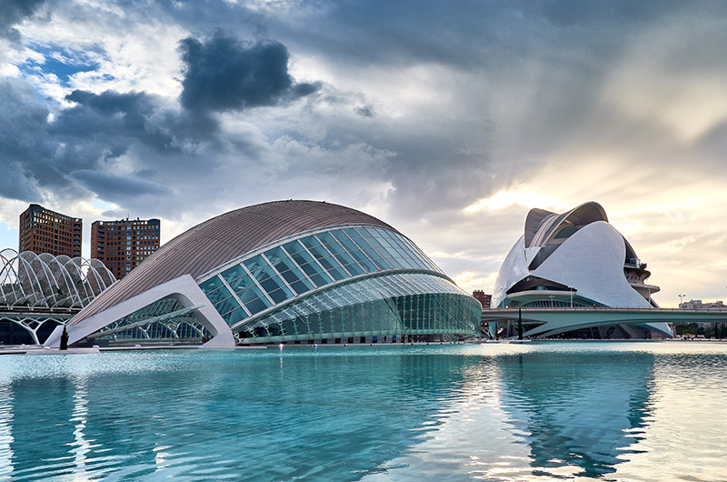
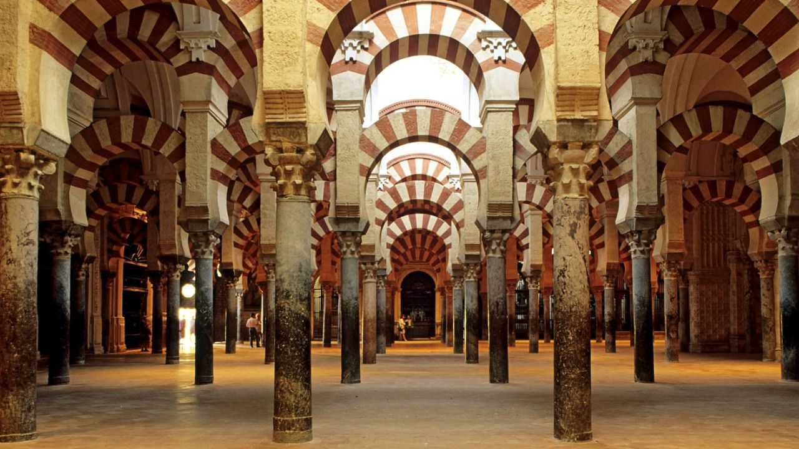
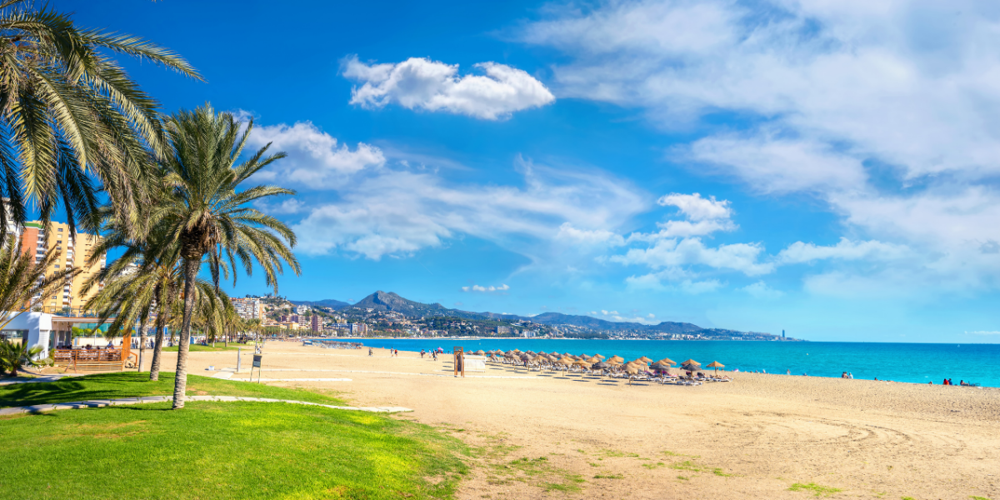

Madrid
Madrid es una ciudad de España,constituye la capital del Estado y de la Comunidad de Madrid.
| Madrid | Barcelona | Valencia | Córdoba |
|---|---|---|---|
 |
 |
 |  |
| Sevilla | Bilbao | Murcia | Malaga |
 |
 |
 |
Madrid es una ciudad de España,constituye la capital del Estado y de la Comunidad de Madrid.
Barcelona es la segunda ciudad mas poblada de España lo que la hace una de las mas atractivas desde el punto de vista del turismo.
Valencia es una ciudad que a su vez es capital de la Comunidad Valenciana es la tercera ciudad mas grande de España, detras de Madrid y Barcelona.
Córdoba es una ciudad de Andalucía situada a orillas del rio Guadalquivir y al pie de Sierra Morena
Sevilla es un municipio y una ciudad de España, capital de la provincia homónima y de Andalucía. Contaba con 691 395 habitantes en 2020, por lo que es la ciudad más poblada de Andalucía, la cuarta de España después de Madrid, Barcelona y Valencia.
Bilbao es un municipio situado en el norte de España, capital de la comunidad autonoma del Pais Vasco.
Murcia es una ciudad española, capital del municipio del mismo nombre y de la region de Murcia.
Málaga es una ciudad y municipio de España, capital de la provincia homónima y ubicada en Andalucía, al sur del país